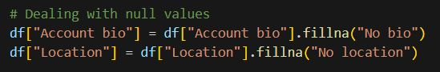
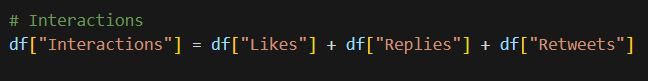
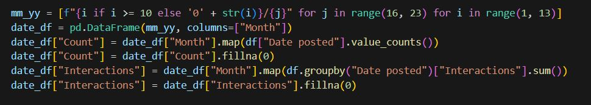

This dataset contains 102 tweets taken from 2016-2022. Let's call this dataset "df"
The columns are as follows:
- Keywords - what was searched on Twitter to find the tweet
- Account handle
- Account name
- Account bio
- Account handle
- Account type - whether the Twitter user is Anonymous or Identified
- Joined - when their account was created
- Following
- Followers
- Location
- Tweet
- Date posted
- Likes
- Replies
- Retweets
Data pre-processing
During exploration, it was discovered that only "Account bio" and "Location" contained null values.
Since these columns didn't hold a particularly significant value in exploring the data,
the null values were simply replaced with signifiers that explicitly said their state.

The "Joined" and "Date posted" columns contained datetime data types that were varying in formats.
For the purposes of this exploration, their values were changed into string data type following a mm/yy format.
Another column was introduced, taking the sum of "Likes", "Replies", and "Retweets", to form the column "Interactions"

A new dataset
For ease of exploration tweet frequency, a new dataset, which we'll call "date_df" was created with the following columns:
- Month - this is just a list of the months from 2016 - 2022 in mm/yy format
- Count - this counts the number of tweets that were found for every month listed
- Interactions - this counts the number of interactions that tweets received each month for every month listed

Visualization!
The image below shows the correlation of each numerical-valued variable of the df dataset.
A couple of interesting noticeable things can be seen. Firstly being "Following" and "Replies" being the only negatively correlated variables.
Another noticeable thing is how strongly positively correlated "Likes", and "Retweets" are,
which in effect makes the correlation of these two variables with "Interactions" also strongly positive.